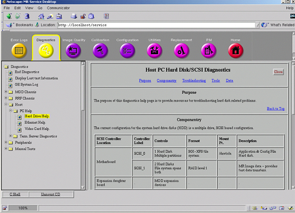
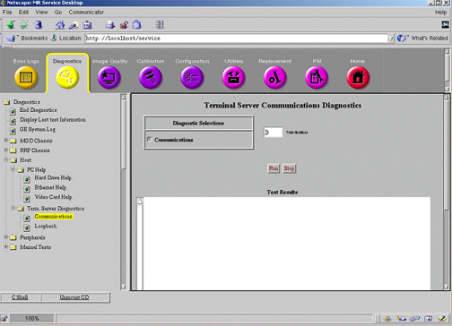

Operating Documentation
Direction 5133315-3, Rev# 14
Signa EXCITE HD 1.5T Service Methods
Module Version 2.0, Version Date 3/7/08
Operating Documentation |
These diagnostics or “help screens” provide information that will verify the configuration of the LINUX PC. Clicking on more info will provide the default settings for the LINUX PC. We can verify status of the Hard Drives, Ethernet and Video board. See Illustration 1.
Illustration 1: Diagnostics Help Screen

The Term Server diagnostics is a communication check between Linux PC and Host computer. Selecting the Communications test will verify communication between Linux and Term Server.
Illustration 2: Term Server Diagnostics

You must install the jumper onto one of the Ethernet jacks to execute the Loopback test. Install jumper onto any port, and execute the test. Failures indicate a defective Term Server, if the communications test passes.